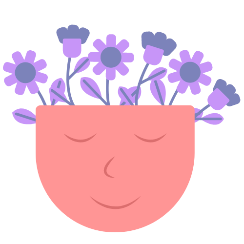
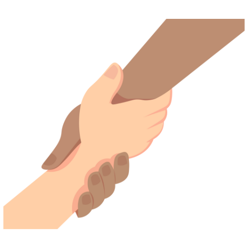

<section id="howtohelp">
  <div class="full-container wrap">
    <div class="title-container green">
      <h4>¿Como puede ayudarte la terapia?</h4>
      <h2>
        Explora las diferentes facetas de la terapia y descubre cual se adapta
        mejor a tus necesidades
      </h2>
    </div>

    <div class="card-container">

      <div class="card1" id="card1">
        
           <h4>Exploración Personal</h4>
           <p>
             Un espacio seguro y confidencial para explorar tus pensamientos,
             emociones y experiencias de vida. Te brinda la oportunidad de
             comprender mejor quién eres, qué te motiva y cómo puedes alcanzar tus
             metas personales.
           </p>
        <!-- <div class="cardi"></div> -->
      </div>

      <div class="card2" id="card2">
        


        <h4>Apoyo emocional</h4>
        <p>
          En momentos de dificultad o crisis, contar con el apoyo de un
          profesional puede marcar la diferencia. Un terapeuta puede ofrecerte
          orientación, comprensión y empatía mientras navegas por situaciones
          estresantes, duelos, conflictos interpersonales o problemas de salud
          mental.
        </p>
        <!-- <div class="cardi"></div> -->

      </div>
      

      <div class="card3" id="card3">
        


        <h4>Aprendizaje de habilidades</h4>
        <p>
          Durante la terapia, aprenderás nuevas habilidades y estrategias para
          afrontar los desafíos de la vida de manera más efectiva. Desde
          técnicas de manejo del estrés hasta habilidades de comunicación y
          resolución de problemas, la terapia te proporciona herramientas
          prácticas para mejorar tu bienestar emocional y mental.
        </p>
        <!-- <div class="cardi"></div> -->

      </div>

      <div class="card4" id="card4">
        


        <h4>Crecimiento Personal</h4>
        <p>
          La terapia no solo se trata de resolver problemas; también se trata de
          crecer y desarrollarte como persona. A través del autoconocimiento y
          la autorreflexión, puedes identificar patrones de pensamiento o
          comportamiento que te limitan y trabajar para superarlos. Este proceso
          de crecimiento personal te permite alcanzar tu máximo potencial y
          vivir una vida más plena y satisfactoria.
        </p>
        <!-- <div class="cardi"></div> -->

      </div>
    </div>

  </div>
</section>
